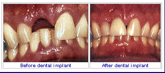

A dental implant is an artificial tooth root that a periodontist places into your jaw to hold a replacement tooth or bridge. Dental implants are an ideal option for people in good general oral health who have lost a tooth or teeth due to periodontal disease, an injury, or some other reason.
While high-tech in nature, dental implants are actually more tooth-saving than traditional bridgework, since implants do not rely on neighboring teeth for support.
Dental implants are so natural-looking and feeling, you may forget you ever lost a tooth. You know that your confidence about your teeth affects how you feel about yourself, both personally and professionally. Perhaps you hide your smile because of spaces from missing teeth. Maybe your dentures don't feel secure. Perhaps you have difficulty chewing. If you are missing one or more teeth and would like to smile, speak and eat again with comfort and confidence, there is good news! Dental implants are teeth that can look and feel just like your own! Under proper conditions, such as placement by a periodontist and diligent patient maintenance, implants can last a lifetime. Long-term studies continue to show improving success rates for implants.
What Dental Implants Can Do?
- Replace one or more teeth without affecting bordering teeth.
- Support a bridge and eliminate the need for a removable partial denture.
- Provide support for a denture, making it more secure and comfortable.
Types of Implants in Use Today
- Endosteal (in the bone): This is the most commonly used type of implant. The various types include screws, cylinders or blades surgically placed into the jawbone. Each implant holds one or more prosthetic teeth. This type of implant is generally used as an alternative for patients with bridges or removable dentures.
- Subperiosteal (on the bone): These are placed on top of the jaw with the metal framework's posts protruding through the gum to hold the prosthesis. These types of implants are used for patients who are unable to wear conventional dentures and who have minimal bone height.

Advantages of Dental Implants Over Dentures or a Bridge
Every way you look at it, dental implants are a better solution to the problem of missing teeth.
- Esthetic Dental implants look and feel like your own teeth! Since dental implants integrate into the structure of your bone, they prevent the bone loss and gum recession that often accompany bridgework and dentures. No one will ever know that you have a replacement tooth.
- Tooth-saving Dental implants don't sacrifice the quality of your adjacent teeth like a bridge does because neighboring teeth are not altered to support the implant. More of your own teeth are left untouched, a significant long-term benefit to your oral health!
- Confidence Dental implants will allow you to once again speak and eat with comfort and confidence! They are secure and offer freedom from the irksome clicks and wobbles of dentures. They'll allow you to say goodbye to worries about misplaced dentures and messy pastes and glues.
- Reliable The success rate of dental implants is highly predictable. They are considered an excellent option for tooth replacement.
Are You a Candidate for Dental Implants?
The ideal candidate for a dental implant is in good general and oral health. Adequate bone in your jaw is needed to support the implant, and the best candidates have healthy gum tissues that are free of periodontal disease.
Dental implants are intimately connected with the gum tissues and underlying bone in the mouth. Since periodontists are the dental experts who specialize in precisely these areas, they are ideal members of your dental implant team. Not only do periodontists have experience working with other dental professionals, they also have the special knowledge, training and facilities that you need to have teeth that look and feel just like your own.
Your dentist and periodontist will work together to make your dreams come true.
What Is Treatment Like?
This procedure is a team effort between you, your dentist and your periodontist. Your periodontist and dentist will consult with you to determine where and how your implant should be placed. Depending on your specific condition and the type of implant chosen, your periodontist will create a treatment plan tailored to meet your needs. More information about the treatment options is described below.
- Replacing a Single Tooth If you are missing a single tooth, one implant and a crown can replace it. A dental implant replaces both the lost natural tooth and its root.
- Replacing Several Teeth If you are missing several teeth, implant-supported bridges can replace them. Dental implants will replace both your lost natural teeth and some of the roots.
- Replacing All of Your Teeth If you are missing all of your teeth, an implant-supported full bridge or full denture can replace them. Dental implants will replace both your lost natural teeth and some of the roots.
- Sinus Augmentation A key to implant success is the quantity and quality of the bone where the implant is to be placed. The upper back jaw has traditionally been one of the most difficult areas to successfully place dental implants due to insufficient bone quantity and quality and the close proximity to the sinus. Sinus augmentation can help correct this problem by raising the sinus floor and developing bone for the placement of dental implants.
- Ridge Modification Deformities in the upper or lower jaw can leave you with inadequate bone in which to place dental implants. To correct the problem, the gum is lifted away from the ridge to expose the bony defect. The defect is then filled with bone or bone substitute to build up the ridge. Ridge modification has been shown to greatly improve appearance and increase your chances for successful implants that can last for years to come.
What Can I Expect After Treatment?
As you know, your own teeth require conscientious at-home oral care and regular dental visits. Dental implants are like your own teeth and will require the same care. In order to keep your implant clean and plaque-free, brushing and flossing still apply!
After treatment, your periodontist will work closely with you and your dentist to develop the best care plan for you. Periodic follow-up visits will be scheduled to monitor your implant, teeth and gums to make sure they are healthy.